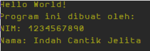

Dasar Pemrograman
Jobsheet 01
Instalasi Java Development Kit (JDK)
Prosedur percobaan
- Download installer Java Development Kit (JDK) pada alamat berikut.
- Pilih Accept License Agreement kemudian pilih JDK berdasarkan sistem operasi yang digunakan. (Catatan: untuk sistem operasi berbasis UNIX, sebaiknya cara instalasi menggunakan package manager yang tersedia, contoh: apt, yum atau homebrew).
- Setelah file installer selesai diunduh, kemudian jalankan serta ikuti instruksi proses instalasinya.
- Untuk langkah selanjutnya, hanya dikhususkan untuk sistem operasi Windows. Pada Windows diperlukan setting PATH terlebih dahulu sehingga perintah java dapat dikenali.
- Buka Control Panel -> System -> Advanced System Setting -> Environment Variable. Kemudian cari variable PATH. Jika belum ada, maka buatlah variable PATH tersebut.
- Jika variable PATH sudah ada, dan nilai dari variable tersebut sudah ada,
maka jangan dihapus nilai sebelumnya. Cukup tambahkan C:\Program
Files\Java\jdk
\bin (sebagai pemisah antar nilai digunakan karakter;). Lokasi nilai JDK yang ditambahkan sesuaikan folder dimana Java terinstall. - Buka Command Prompt (Win + R, kemudian ketik
cmd) dan ketikkan perintahjavac -version. Jika perintah tersebut dikenali, maka lingkungan sistem operasi windows telah mendukung program java. Jika belum dikenali, ada kemungkinan kesalahan dalam memasukkan lokasi direktori bin pada variable PATH.
Pertanyaan
- Jelaskan apa kegunaan memasukkan lokasi folder bin dari Java ke dalam variable PATH?
- Selain JDK, ada istilah JRE dan JVM. Jelaskan apa perbedaan dari ketiga istilah tersebut!
- Jelaskan mengapa program Java bersifat Multiplatform?
Aplikasi Java Sederhana 1
Prosedur Percobaan
- Buka aplikasi text editor (Sublime, Notepad++, Atom atau Notepad) yang telah terpasang di komputer anda!
- Buatlah file baru dengan nama Hello.java (huruf H berupa huruf kapital).
- Kemudian tuliskan kode program di bawah ini! (Catatan: Program java harus
dibungkus dalam sebuah class. Penamaan class disesuaikan dengan nama file,
tanpa ekstensi
.java)
class Hello {
public static void main(String args[]) {
// Baris di bawah ini akan menampilkan kalimat "Hello World!"
System.out.println("Hello World!");
}
}
Simpan, kemudian buka aplikasi Command Prompt dan masuk ke lokasi folder di mana file Hello.java tersimpan. Untuk pindah ke direktori, anda dapat menggunakan perintah
cd.Compile Hello.java dengan mengetikkan perintah berikut.
javac Hello.java
Perhatikan hasil proses kompilasi, jika proses kompilasi berhasil akan terdapat file baru dengan nama Hello.class
Untuk menjalankan program yang telah dikompilasi, masukkan perintah berikut (tanpa ekstensi
.class).
java Hello
Pertanyaan
- Jelaskan apa kegunaan perintah
javac NamaFile.java? Apa yang dihasilkan dari perintahjavactersebut? - Jelaskan apa kegunaan perintah
java NamaClass? - Apa kegunaan dari baris ke-3 pada percobaan di atas?
- Apa kegunaan perintah
System.out.println()dalam program Java? - Pada baris ke-2 sampai dengan baris ke-5 tambahkanlah karakter
//. Kemudian compile ulang dengan menggunakan perintahjavacdan jalankan program dengan perintahjava. Amati apa yang terjadi dan jelaskan! - Ambil kesimpulan tentang bagaimana tahapan proses pembuatan program Java berdasarkan percobaan tersebut!
Aplikasi Sederhana Java 2
Prosedur Percobaan
- Buatlah file baru dengan nama
Mahasiswa.java - Pada file baru tersebut, buatlah baris kode program sehingga menghasilkan output yang sama dengan percobaan Aplikasi Sederhana 1.
- Tambahkan informasi biodata diri kalian sehingga didapatkan hasil seperti berikut.
